A brick, and a system for building with it.
SeaBrick is a hexagonal, buoyant, interlocking brick. On its own it is a small thing. Connected to thousands of others it is a floating platform, a breakwater, a dock, a foundation. This page has two parts: the geometry of the brick and how bricks fit together, and the material it is made of. How both got here is on the evolution page.
Geometry and design

Hexagonal, hollow, buoyant.
A SeaBrick is a hexagonal brick about one and a half times as wide as it is tall. The hexagon tiles the plane with no gaps, gives every brick six equal neighbours and has no long straight joints. Each of the six sides carries a connector; the top and bottom register with the course above and below. Inside, sealed cavities provide buoyancy; outside, a dense shell carries the loads where bricks meet.
Bricks are designed to be moulded in a single cycle, so they can be made in small facilities close to where they are used. The design has been through more than twenty versions since 2022; the evolution page shows them.
- Floats
- Locks to six neighbours
- Stacks in courses
- Moulded, not machined
- Replaceable one at a time


One brick, eleven variations
Every shape in the system is a subset of the same brick. The number of connectors says how many of the six sides lock to a neighbour; the rest are flat wall faces. Two upright wedges clad wall boundaries, and a double-height brick ties courses together.
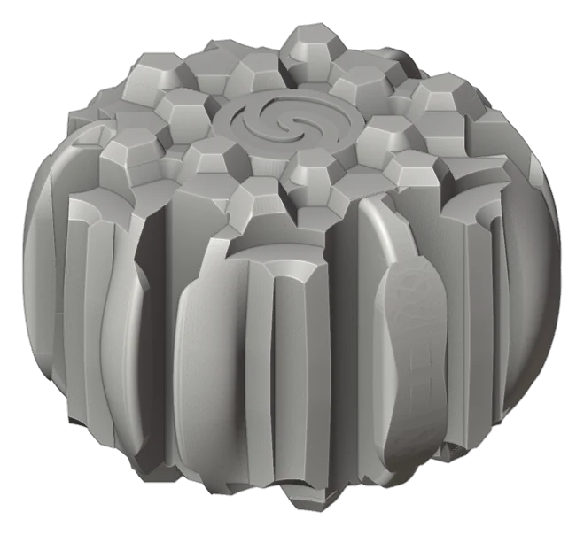
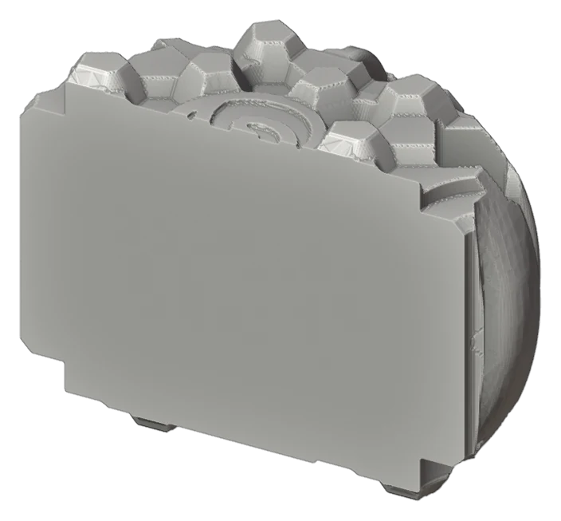
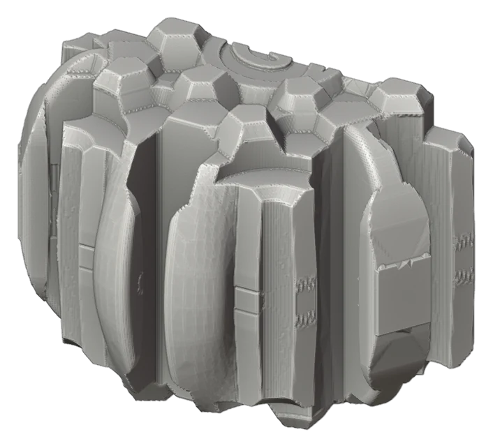
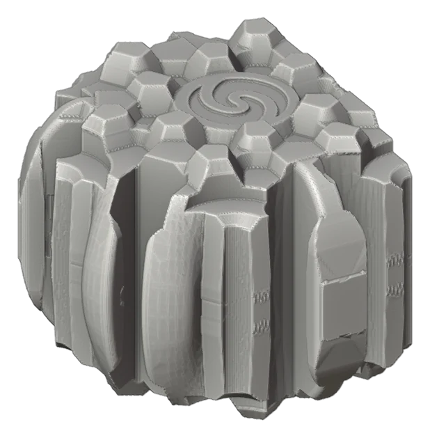
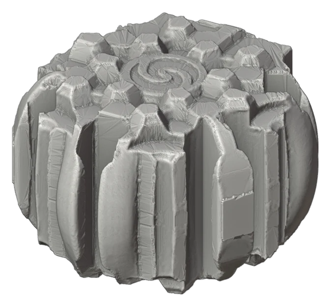
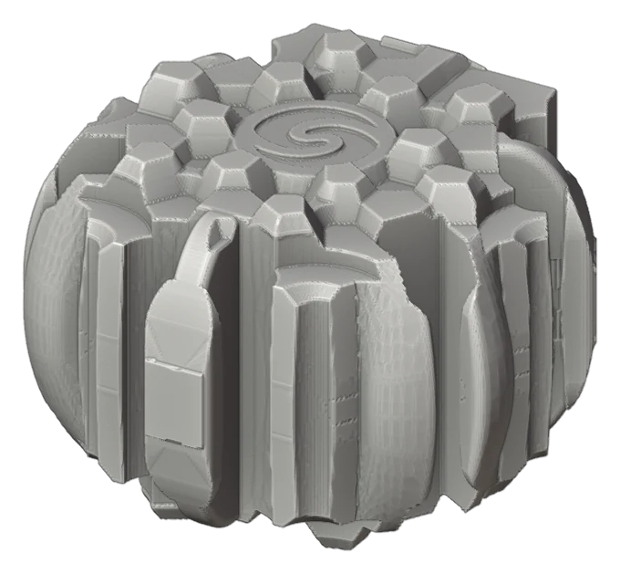
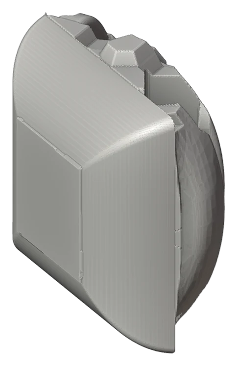
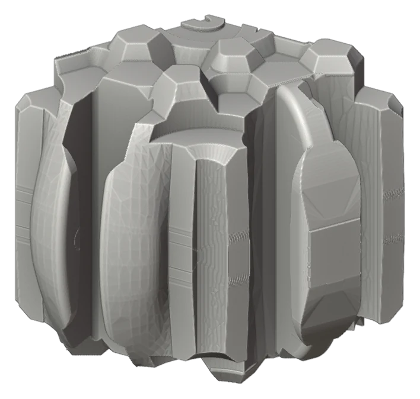
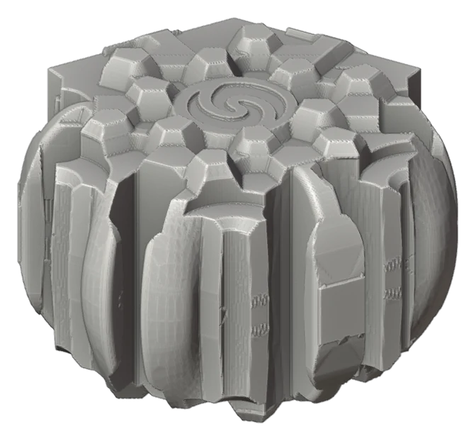
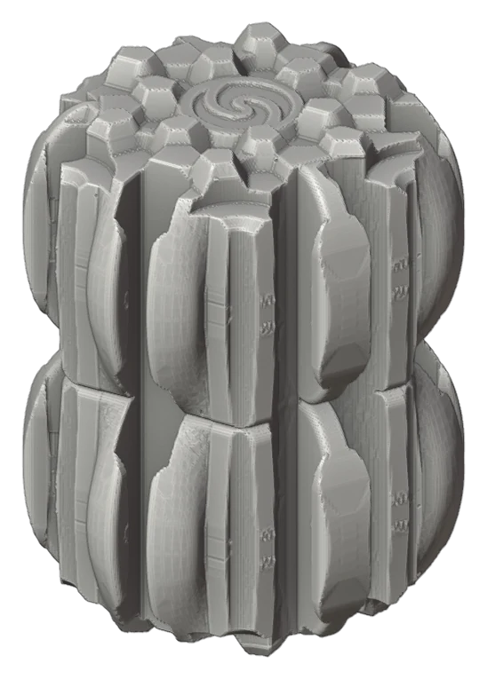
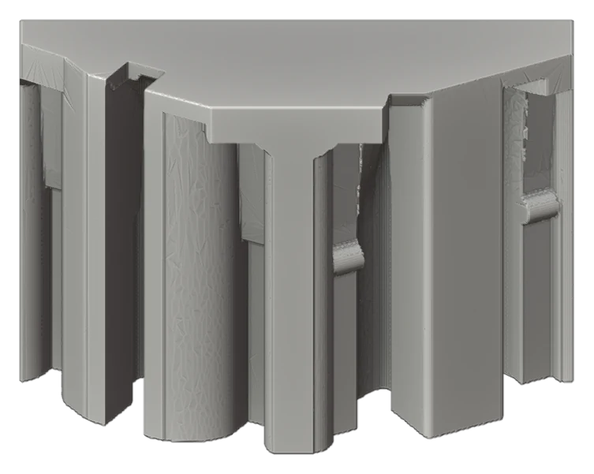
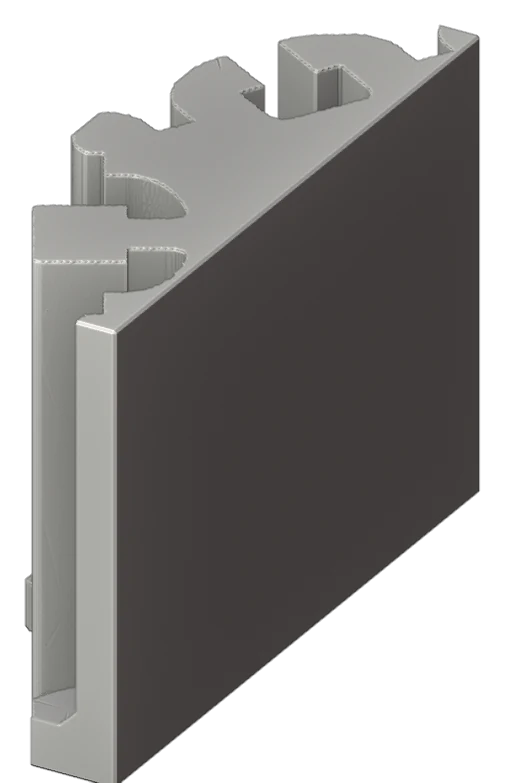
Seven ways to build with SeaBrick
The same brick, arranged differently. The 3D views are live: drag to orbit, scroll to zoom, click a brick to identify it. The photographs show model bricks from an earlier generation of the design.
One brick, six neighbours
Every SeaBrick locks to its six neighbours in the same course and to the courses above and below. The research questions are the ones any dry-laid system has: how much force a joint carries, how far it can flex before it lets go, and whether a brick can be removed and reseated without tools. The connection lab explores joint behaviour on a two-brick model.


Photos: model bricks of an earlier design generation, 2026.
Floating mats
A single course of bricks laid flat is a mat: a buoyant deck that can be any shape the hex grid allows. Courses sit in one of three registrations, A, B and C, so that each course bridges the joints of the one below. Mats are the basis for work floats, aquaculture platforms and docks, the structures we expect to build first.


Photos: model bricks of an earlier design generation, 2026.
Tubes and towers
Bricks laid in a ring, course on course, make a hollow tube; keep going and it is a tower. Half bricks and edge bricks close the ring so that every internal tongue meets a claw. Tubes are stiff for their weight and were the first thing almost everyone built at the SeaBrick party. In a floating structure they become pontoons, piles, culverts and the legs of a platform.


Photos: model bricks of an earlier design generation, 2026.
Walls and enclosures
Straight runs of wall bricks between corners make the sides of an enclosure: the hull of a barge, a breakwater face, a tank for growing fish or seaweed. A twelve-sided ring uses two families of wall direction, with upright wedge inserts cladding the boundary. In the builder, gold marks the bricks whose flat faces form the wall.


Photos: model bricks of an earlier design generation, 2026.
Bridging the courses
A double-height brick spans two courses and ties them together, so a stack of rings behaves as one body rather than a pile of loose layers. Turn the bridges off in the builder and the courses come apart.


Photos: model bricks of an earlier design generation, 2026.
Vertical tension cables
Dry-laid bricks resist compression well and tension poorly. Vertical cables run through aligned cavities in a stack and clamp the courses together, so a multi-course platform can carry point loads and hold together in a swell. Cables can be tightened, inspected and replaced from above. The render is schematic: cable routing is part of the current design study.
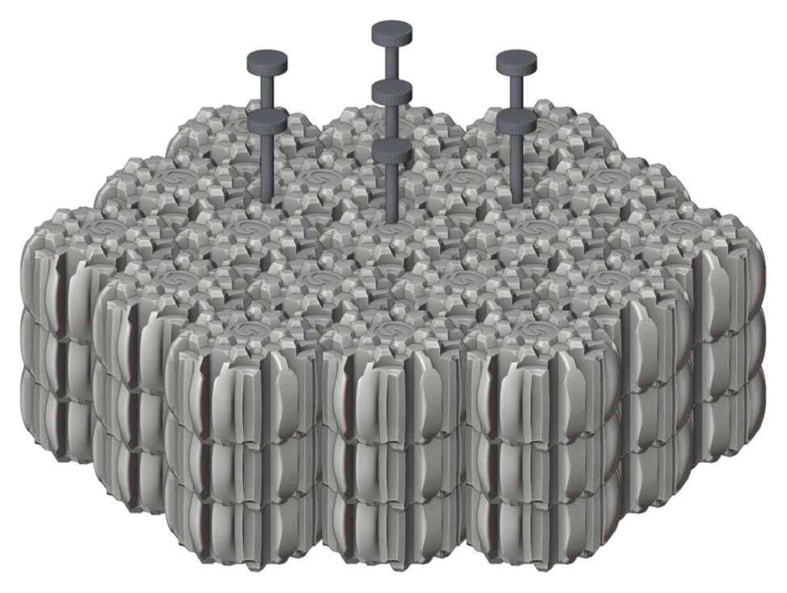


Photos: model bricks of an earlier design generation, 2026.
Gel-sealed cavities
Much of a brick's buoyancy comes from sealed internal cavities. Filling them with a lightweight closed-cell gel means a breached shell loses a little buoyancy rather than all of it, and leaves nothing inside the brick for water or marine growth to colonise. This is a concept under evaluation alongside the barrier coating. The cutaway shows the outer form only; the internal cavity layout is not shown.
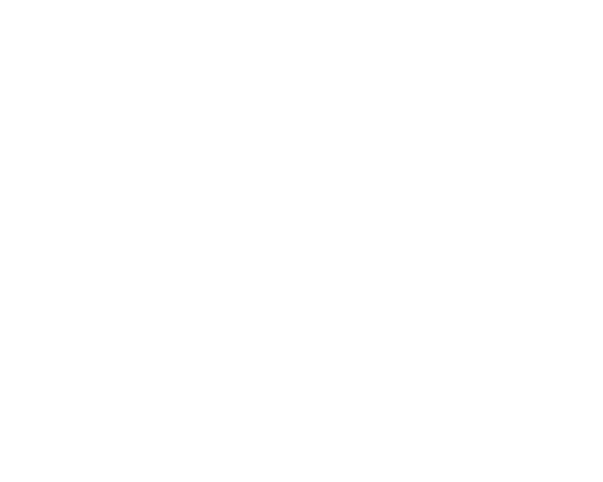


Photos: model bricks of an earlier design generation, 2026.
Material technology
A light mineral core, a dense mineral shell, plant fibre throughout.
The material has two jobs that pull against each other: provide buoyancy, and carry the forces that pass between connected bricks. The current strategy gives each job to a different part of the brick.
Core
A low-density mineral foam, made with lightweight glass particles or controlled air in a magnesium-silicate binder. It supplies most of the buoyancy. The open question is how light it can be before strength, stability and water resistance suffer.
Shell
A denser mineral layer that protects the core and carries contact loads, with the most solid material concentrated where bricks grip one another. A barrier coating goes over it.
Fibre
Short, treated plant fibres mixed into the core add strength and reduce brittleness. This is the thread back to the project's kelp and flax years; today the fibre is a reinforcement, not the structure.
Why mineral binders
Magnesium-silicate binders cure without the high-temperature clinker that gives Portland cement its carbon footprint, they are not degraded by seawater the way reinforced concrete is, and they do not swell. With roughly a tenth of the mix as plant fibre, and some uptake of carbon dioxide by the mineral over its life, the material should have far lower emissions than marine concrete. Whether a finished brick is fully carbon-negative is not yet established, and we will not say so until it is measured.
What has been shown, and what has not.
| Shown | Bio-based composites stronger than concrete in compression on lab specimens (2022 to 2025). Model-scale bricks that assemble into mats, tubes, walls and frames by hand (2026). A moulding approach that produces one brick per cycle. Ring, tube and tower layouts in which every internal tongue has a claw partner (design study, 2026). |
|---|---|
| Being tested | Mineral foam core density and batch variation; water uptake under immersion and wet-dry cycling, including after surface damage; shrinkage and core-to-shell bond through curing and ageing; reliable demoulding; joint clearance and insertion order on the final brick. |
| Not yet shown | A full-size brick qualified for marine use. Joint strength under wave loading at scale. Long-term durability and biofouling behaviour in seawater. Carbon-negativity of a finished brick. |
We will update this table as results come in. Nothing on this site is a product specification.
Work with the research
Universities, marine engineers and coastal partners are welcome. The Society's role is to make the system available to people who want to build with it and test it. Get in touch.
About the 3D models
The builder and the renders on this site use smoothed visualization models of the final brick family. They are accurate in overall form and spacing; the connector surfaces are intentionally not modelled and the design files are not distributed.